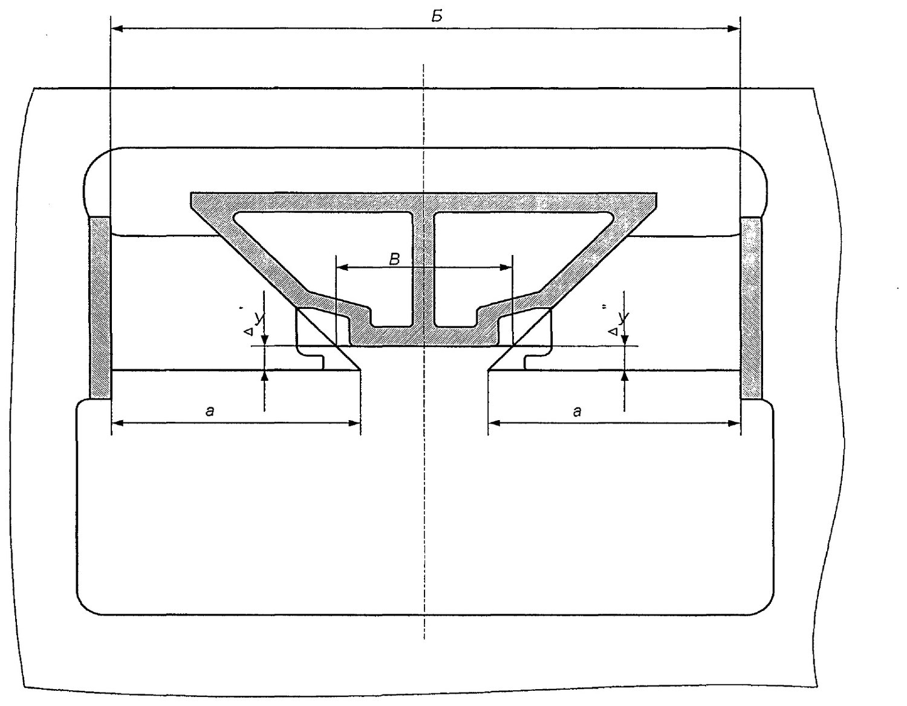

Ta'mirdan chiqarishdagi yakuniy nazorat
18-bo'lim: yosh guruhlari bo'yicha komplektlash, ponalarning pasayishi, plankalarning zich yotishi, skolzun zazorlari va yo'l uchastkasiga qo'yiladigan talablar.
Nazorat qachon va qanday rasmiylashtiriladi (18.1-band)
Ta'mirlangan aravachalarni nazorat qilish rejali ta'mir turi tugagandan so'ng va vagon ostiga podkatka qilingandan keyin o'tkaziladi. Natijalar «Yuk vagonlari ta'mirlangan aravachalarini qabul qilish jurnali, ВУ-32 shakli» ga majburiy kiritiladi.
Yosh guruhlari bo'yicha komplektlash (18.3-band)
Aravachadagi yon ramalar va nadressor balkasi «Normы» talablariga muvofiq yosh guruhlari bo'yicha tanlanadi:
| Guruh | Qurilgan vaqti | Qaysi «Normы» nashriga javob beradi |
|---|---|---|
| Nolinchi | 1997-yildan boshlab | 1996-yil nashri |
| Birinchi | 1985-yildan 1996-yilgacha | 1983-yil nashri |
| Ikkinchi | 1974-yildan 1984-yilgacha | 1972-yil nashri |
| Uchinchi | 1974-yilgacha | 1969-yil nashri |
Friksion ponalarning holati (18.4-band)

| Ta'mir turi | Talab |
|---|---|
| Depo ta'miri (yig'ilib, vagon ostiga podkatka qilingandan keyin) | Hech bo'lmaganda bitta ponaning ko'tarilishi RUXSAT ETILMAYDI; pasayish 12 mm dan ko'p emas |
| Kapital ta'mir | Ponalar nadressor balkasining pastki tayanch yuzasiga nisbatan 4…12 mm ga pasaytiriladi |
Barcha aravachalarda tekshiriladigan zichliklar (18.5-band)
Nazoratdan yuk vagonlarining barcha aravachalari o'tkaziladi. Tekshiriladi:
| Nima tekshiriladi | Ruxsat etilgan mahalliy zazor |
|---|---|
| Qo'zg'almas friksion plankaning yon rama privalochniy yuzasiga zich yotishi | 1 mm dan ko'p emas |
| Harakatlanuvchi plankaning qo'zg'almas plankaga zich yotishi | 1 mm dan ko'p emas |
| Almashtiriladigan prokladkaning buksa tayanch yuzasiga zich yotishi | 1 mm dan ko'p emas |
| Yon ramaning buksa korpuslariga tayanishi (18.10-band) | 1 mm dan ko'p emas |
Kapital ta'mirda nima yangi o'rnatiladi (18.6-band)
- tarkibiy friksion plankalar (harakatlanuvchi va qo'zg'almas);
- cho'yan ponalar;
- yeyilishga chidamli prokladkalar;
- skolzun qalpoqlari.
Depo ta'mirida qanday yeyilishga ruxsat beriladi (18.7–18.9-bandlar)
Sisternalardan tashqari barcha turdagi yuk vagonlarida ruxsat etiladi:
| Detal | Ruxsat etilgan maksimal yeyilish |
|---|---|
| Qo'zg'almas friksion planka (harakatlanuvchi planka bilan ta'sirlashuvchi yuza) | 1,5 mm |
| Harakatlanuvchi friksion planka — qalinlik bo'yicha umumiy (ikki tomondan) | 2 mm gacha, lekin bir tomondan 1,5 mm dan ko'p emas |
| Cho'yan pona — umumiy yeyilish (qiya va vertikal tekislik) | 3 mm gacha, lekin bir tomondan 2 mm dan ko'p emas |
| Yeyilishga chidamli prokladka plastinasining notekis yeyilishi | 2 mm gacha |
| Podpyatnikdagi prokladka (faska pastga) — qalinlik bo'yicha umumiy | 2 mm gacha, lekin bir tomondan 1,5 mm dan ko'p emas |
Skolzunlardagi zazorlar (18.8-band)
| Vagon turi | Ikki tomondagi umumiy zazor |
|---|---|
| Barcha turdagi to'rt o'qli vagonlar (istisnolardan tashqari) | 6 mm dan kam emas va 16 mm dan ko'p emas |
| Sisternalar, don, sement, mineral o'g'it, okatish uchun xopper-vagonlar, ЦНИИ-ДВЗ xopper-dozatorlari | 4…10 mm |
| Boshqa turdagi xopperlar va dumpkarlar | 6…12 mm |
Zazorlarni rostlash uchun qalinligi 1,5…5,0 mm bo'lgan listli po'latdan rostlash prokladkalari qo'llaniladi — to'rttadan ko'p bo'lmagan miqdorda.
18-101 modelidagi to'rt o'qli aravachani yig'ishda biriktiruvchi balka skolzunlari bilan nadressor balkalari skolzun qalpoqlari orasidagi zazorlar har bir aravachaning ikki tomonidan jami 4…10 mm oralig'ida bo'lishiga ruxsat etiladi. Aravachalarni vagon ostiga podkatka qilishda vagon ramasi skolzunlari bilan biriktiruvchi balka orasidagi zazor har bir vagon uchining ikki tomonidan jami 4 mm dan kam va 12 mm dan ko'p bo'lmasligi kerak. Kapital ta'mirda mos ravishda 5…10 mm va 4…10 mm.
Bazalar va zazorlar (18.11–18.12-bandlar)
- Aravachaning yon ramalari bir xil yoki 2 mm farq bilan bazaga ega bo'lishi kerak; baza yig'uv paytida shablon bilan aniqlanadi va yig'uvni bajargan shaxslar tomonidan jurnalga qayd etiladi.
- Yon rama yo'naltiruvchilari bilan bitta buksa korpusi orasidagi umumiy zazor: ДР da bo'ylama 5…14 mm, ko'ndalang 5…13 mm (18-100 uchun 3…12 va 5…12 mm); КР da bo'ylama 5…12 mm, ko'ndalang 5…11 mm (18-100 uchun 3…10 va 5…10 mm).
Rostlash qaysi yo'lda bajariladi (18.17-band)
| Parametr | Talab |
|---|---|
| Yo'l uchastkasi | To'g'ri, uzunligi 30,0 metrdan kam emas |
| Bir relsning ikkinchisidan balandligi | 2 mm dan ko'p emas |
| Har qanday relsning to'g'ri chiziqlilikdan chetlanishi | 4 mm dan ko'p emas |
| Yo'l kengligi | 1520 ± 2 mm |
Avtomatlashtirilgan stendlar (18.15-band)
Vagon ta'mirlash korxonalari avtomatlashtirilgan stendlar bilan jihozlanganda rejali ta'mirdagi aravachalarni qabul qilish stendlarning texnik imkoniyatlaridan kelib chiqib bajariladi — parametrlar (o'lchamlar) maxsus jurnallarda majburiy qayd etilishi sharti bilan.
Nazorat savollari
Avval o'zingiz javob bering, so'ngra tekshiring.
1. Ta'mirlangan aravachalar nazorati qachon o'tkaziladi?
2. Aravachaning yosh guruhi raqami nimaga qarab belgilanadi?
3. Depo ta'mirida friksion ponaning ko'tarilishiga ruxsat beriladimi?
4. To'rt o'qli vagonlarda skolzunlardagi umumiy zazor qanday bo'lishi kerak (sisterna va xopperlardan tashqari)?
5. Zazorlarni rostlash qanday yo'l uchastkasida bajariladi?
Manba: РД 32 ЦВ 052-2009 — ГОСТ 9246-2013 bo'yicha zazorli yon skolzunli tip 2 yuk vagon aravachalarini ta'mirlash. Umumiy ta'mir rahbariyati (2026-yil 1-iyuldan amaldagi tahrir).
Andijon vagon deposi · telejka ta'mirlash sexi.